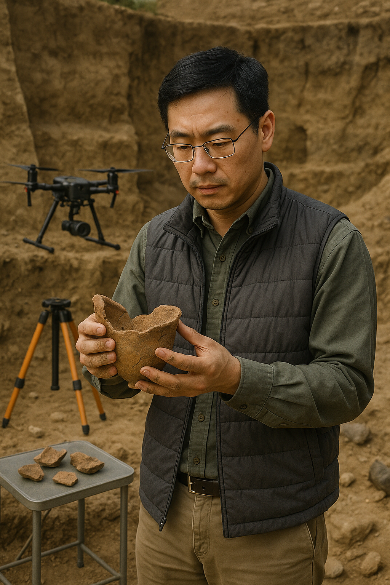
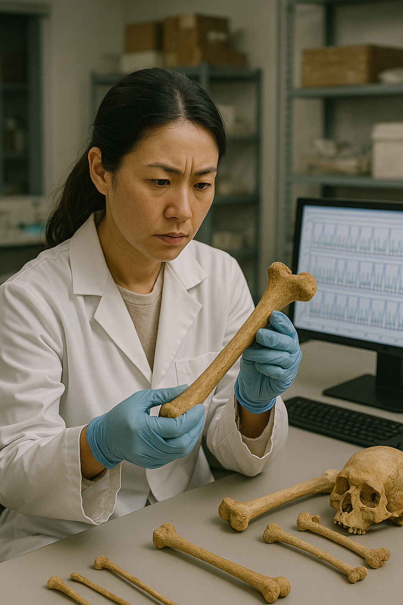
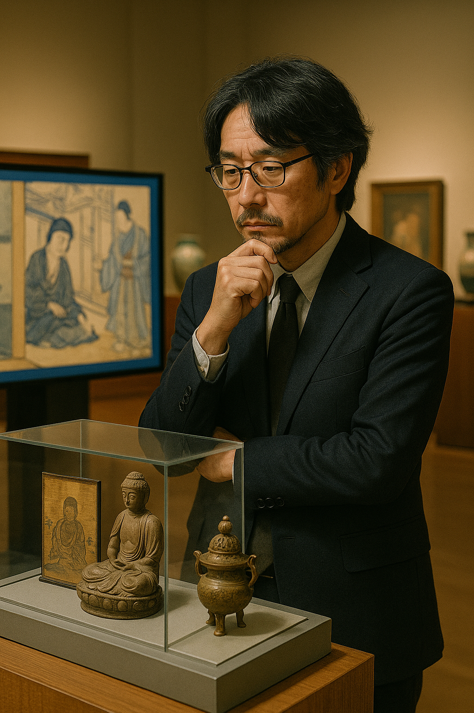

Expertise:
Archaeologist (Specializing in Ancient Chinese Artifacts)
Role:
Lead Researcher – Tang Dynasty Ceramics Collection
Bio:
Dr. Wei Zhang earned his Ph.D. in Archaeology from Peking University under the mentorship of Professor Chen Hui, a leading authority on early Chinese dynasties. His core skills include stratigraphic excavation, digital mapping, and artifact cataloging. At the East Asian History Museum, Dr. Zhang leads the recovery and analysis of ancient objects for the museum’s joint project, working closely with colleagues to integrate findings into a cohesive narrative. His research supports the Artifacts Collection and is closely linked with Dr. Minji Lee’s excavation work and Dr. Haruki Sato’s interpretive storytelling.
Special Considerations:
Recipient of the East Asia Cultural Heritage Award; fluent in Mandarin and Classical Chinese; advocates for open-access heritage databases to democratize archaeological knowledge.

Expertise:
Physical Anthropologist
Role:
Field Director – Korean Burial Practice Excavations
Bio:
Dr. Minji Lee holds dual degrees in Anthropology from Seoul National University (B.A.) and Harvard University (Ph.D.), where she focused on the bioarchaeology of Korea’s Gaya and Silla kingdoms. She maps and excavates key burial sites using osteological profiling and drone photogrammetry. Her work contributes human remains to the museum’s Remains Collection and enriches the shared museum project by revealing sociocultural context alongside Dr. Zhang’s artifact research. She collaborates with Dr. Haruki Sato to translate scientific findings into compelling cultural narratives, ensuring each exhibition reflects both evidence and empathy.
Special Considerations:
Asia Bioarchaeology Fellow; multilingual (Korean, English, Japanese); supports ethical handling of remains and descendant outreach.

Expertise:
Cultural Historian & Mythographer
Role:
Lead Interpreter – Edo Period & Buddhist Artifact Narratives
Bio:
Trained at Kyoto University in Comparative Mythology, Dr. Haruki Sato transforms historical discoveries into public storytelling. At the East Asian History Museum, he curates the Histories Collection by combining artifact analysis from Dr. Wei Zhang and bioarchaeological insights from Dr. Minji Lee. His work ensures that their shared museum project communicates a unified and engaging narrative to visitors. By using semiotic analysis, VR modeling, and oral history interviews, Dr. Sato bridges the scientific and the symbolic, illuminating how past lives, objects, and beliefs interconnect.
Special Considerations:
Raised in a rural temple community in Shikoku; awarded the Neo-Museum Innovation Grant; deeply committed to revitalizing oral traditions and folk epistemologies.